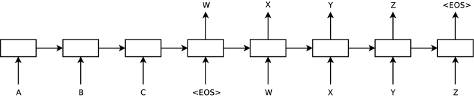
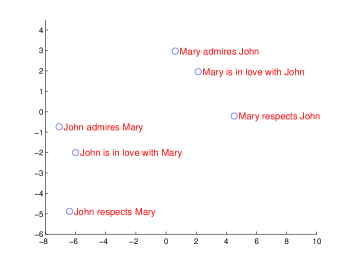

发展脉络
RNN、LSTM、GRU 与 Seq2Seq attention 逐步解决序列状态、梯度和固定向量瓶颈，最终暴露串行计算限制，为 Transformer 铺路。
注意力机制不是凭空掉下来的，它是循环网络两大致命伤——「读不快」和「记不住」——被逼出来的答案。读懂这段历史，你才会真正理解 Transformer 的每一个设计选择到底在解决什么问题。这一节从 RNN 的一行递推公式讲到梯度为什么会消失，从 LSTM 的三道门讲到 Seq2Seq 的信息瓶颈，最后交代注意力是怎么在 2014 年被「逼」出来的。
整条主线只有一句话：为了让机器处理变长文本，先让它一个字一个字「循环」地读（RNN），再给记忆加上门控（LSTM / GRU），接着用「编码器压缩 + 解码器展开」做翻译（Seq2Seq）——直到压缩的瓶颈逼出了注意力（Attention），最终注意力彻底取代循环，Transformer 登场。每一步都不是灵光一闪，而是上一步暴露的缺陷把人逼到墙角后的必然解法。
先用一个生活化的类比开场：想理解为什么汽车最终取代了马车，你不能只看汽车的构造图，还得知道马车当年的两个致命伤——跑不快、装得少——以及人们为了修好马车做过的种种尝试（给马换好鞍、加弹簧减震），最后才明白「换动力方式」才是正解。Transformer 的历史同理：循环网络（RNN，Recurrent Neural Network，一种把序列信息逐步传递的网络）就是那辆马车，LSTM（长短时记忆网络，Long Short-Term Memory，给 RNN 加门控以缓解遗忘）是各种打补丁的尝试，而注意力（Attention，让模型在生成时回头「查阅」输入中任意位置的机制）是那个「干脆换引擎」的决定。不知道马车为什么坏，就读不懂引擎为什么这样设计。
2026 年的大模型清一色是 Decoder-only 的 Transformer，RNN 在主流架构上已经退场。既然退场了，为什么还要读？因为这段历史留下的不是「过时知识」，而是三块仍然活跃的遗产。
展开 块里，跳过也不影响主线。真正要记住的只有两句话：RNN 的问题是「串行 + 遗忘」，注意力的答案是「并行 + 直查」。
把关键节点按年份排开，你会看到一条相当清晰的因果链：每一年解决的，都是前一两年被广泛抱怨的问题。
| 年份 | 工作 | 它解决了什么 | 它留下了什么问题 |
|---|---|---|---|
| 1997 | LSTM | 用细胞状态 + 三道门给梯度开一条「传送带」，长依赖显著改善 | 只是缓解不是根治；串行瓶颈原封不动；参数多、算得慢 |
| 2014 | GRU | 把三门简化为两门，参数更少、训练更快，多数任务上与 LSTM 接近 | 同样没有触碰串行这个根本问题 |
| 2014 | Seq2Seq | 用「编码器 + 解码器」处理输入输出不等长的任务，机器翻译一举突破 | 整句被压成一个固定向量，长句性能断崖式下滑 |
| 2014 | 注意力 | 解码每一步都回头查编码器的全部隐状态，长句问题被显著缓解 | 循环骨架还在，仍然不能并行；复杂度变成 $O(n^2)$ |
| 2017 | Transformer | 把循环整个丢掉，只留注意力，训练完全并行 | $O(n^2)$ 成为长上下文的主要瓶颈，后续十年都在优化它 |
先给一个生活化类比：RNN 的工作方式，很像一个手写笔记的人读一本厚书——他每读一句话，就把这句话的要点浓缩成一行笔记，然后忘掉原句；读下一句时，他同时参考「上一行笔记」和「眼前这句话」再写新笔记。读到第 100 页时，他手里的笔记只剩最后一行，而这本书开头讲了什么，早就被后来几十行笔记层层覆盖得只剩模糊印象。这个类比同时预告了 RNN 的两大致命伤：笔记只能顺序写（读不快），以及开头的信息会被稀释（记不住）。下面的公式，就是把「写笔记」这件事数学化。
循环神经网络（Recurrent Neural Network）的想法很朴素：处理序列时，维护一个不断更新的「记忆」，读到一个新词就把新信息揉进记忆里，并用这份记忆预测下一个词。写成公式只有一行：
这里的 $h_t$ 是第 $t$ 步的隐状态，它既受当前输入 $x_t$ 影响，也受上一步隐状态 $h_{t-1}$ 影响——这就是「循环」二字的意思。特别要注意：同一组参数 $W_{hh}$、$W_{ih}$ 在每个时间步被反复使用，所以 RNN 处理 10 个词和处理 1000 个词用的是同一套权重，参数量与序列长度无关。这在 2014 年是个了不起的性质，它让「变长输入」第一次变得可训练。
用一句话给 RNN 定性：它把「整个历史」压缩成一个固定维度的向量，并让信息像接力棒一样沿时间轴逐棒传递。这个定性同时解释了它的优点（参数少、天然处理变长）和它的两个结构性缺陷。
第 $t$ 步的计算依赖第 $t-1$ 步的输出，天然无法并行。句子越长，算得越慢，而且这个「慢」不是常数倍的慢，是结构性的慢——GPU 有上万个计算核心，但 RNN 在任一时刻只能让其中极小一部分工作，其余全在等。
给个具体感受：处理一条 2048 token 的序列，RNN 必须依次执行 2048 次矩阵乘法，每次的规模都很小（一个 $d \times d$ 矩阵乘一个 $d$ 维向量）；而自注意力可以把这 2048 个位置打包成一次大矩阵乘法交给 GPU。前者是「两千次小活」，后者是「一次大活」，在现代硬件上后者的吞吐要高出一两个数量级。今天动辄 128K 上下文的训练，用 RNN 在物理上就跑不动。
梯度在时间轴上反向传播时是连乘的：每回退一个时间步就乘一次 $\frac{\partial h_{t+1}}{\partial h_t}$。当这些因子的范数普遍小于 1 时，远处的梯度指数级衰减，这就是梯度消失；普遍大于 1 时则指数级爆炸，这就是梯度爆炸。
数字最直观：假设每步的雅可比范数是 0.9，回退 50 步后梯度只剩 $0.9^{50} \approx 0.005$，回退 100 步只剩 $0.9^{100} \approx 2.7 \times 10^{-5}$。也就是说，句子开头那个词对句尾预测的影响，在梯度层面几乎已经不存在了——模型学不会「五十个词之前那个主语，决定了现在这个动词的单复数」这类规律。
设损失 $\mathcal{L}$ 只在最后一步 $T$ 计算，我们关心它对早期隐状态 $h_k$（$k \ll T$）的梯度。由链式法则：
对 $h_t = \tanh(W_{ih}x_t + W_{hh}h_{t-1} + b)$ 求偏导：
注意两点。第一，$\tanh$ 的导数是 $1 - \tanh^2$，取值范围是 $(0, 1]$，且只有输入接近 0 时才接近 1——一旦隐状态被推向饱和区，这个因子就迅速趋近 0。第二，$W_{hh}$ 在每一步都是同一个矩阵，所以连乘 $T-k$ 次约等于对 $W_{hh}$ 求幂。
矩阵求幂的行为由它的最大奇异值 $\sigma_{\max}$ 主导：$\sigma_{\max} < 1$ 则整体指数收缩（消失），$\sigma_{\max} > 1$ 则指数膨胀（爆炸）。而 $\tanh$ 导数那个恒 $\le 1$ 的因子只会让情况更偏向消失。这就是为什么 RNN 天然偏向梯度消失而不是爆炸——除非 $W_{hh}$ 被初始化得很大。
这也顺带解释了残差连接为什么有效：它把 $\frac{\partial h_t}{\partial h_{t-1}}$ 从「一个可能很小的矩阵」变成「单位矩阵 $I$ 加上一个可能很小的矩阵」，连乘时永远有一条不衰减的通路。详见 残差连接与深层稳定。
与其记住结论，不如跑一遍。下面这段 PyTorch 代码手写一个最朴素的 RNN，前向跑 100 步，然后看损失对每一步隐状态的梯度范数如何随「距离终点的步数」变化。
import torch
torch.manual_seed(0)
d, T = 64, 100 # 隐藏维度, 时间步数
W_hh = torch.randn(d, d) * 0.5 / (d ** 0.5) # 谱半径偏小的循环矩阵
W_ih = torch.randn(d, d) * 0.5 / (d ** 0.5)
xs = [torch.randn(d) for _ in range(T)]
h = torch.zeros(d, requires_grad=True)
hs = [] # 保留每一步的 h 以便观察梯度
for t in range(T):
h = torch.tanh(W_ih @ xs[t] + W_hh @ h)
h.retain_grad() # 非叶子张量也保留梯度
hs.append(h)
loss = hs[-1].sum() # 损失只依赖最后一步
loss.backward()
for k in [99, 90, 80, 60, 40, 20, 0]:
g = hs[k].grad.norm().item()
print(f"距终点 {99 - k:3d} 步 -> 梯度范数 {g:.3e}")典型输出的形状是：距终点 0 步时梯度范数是 $O(1)$ 量级，往回每退 20 步就掉一到两个数量级，退到序列开头时已经是 $10^{-8}$ 甚至更小。把 W_hh 的缩放系数从 0.5 调到 2.0 再跑一次，你会看到反向的现象——梯度一路暴涨到溢出，这就是梯度爆炸。
这个实验的价值在于：梯度消失不是某个实现的 bug，而是「同一个矩阵连乘很多次」这件事的数学必然。换任何激活函数、换任何初始化，都只能改变衰减的速度，改变不了指数衰减的性质。
长短时记忆网络（Long Short-Term Memory）的解法是：把「记忆」和「输出」分开管理。它引入一条独立的细胞状态 $C_t$——相当于一条横贯时间的「传送带」——并用三个门决定信息如何进出这条传送带。
决定旧记忆里哪些该丢弃。输出 0 到 1 之间的向量，逐元素乘到 $C_{t-1}$ 上。像整理房间时先扔掉不需要的东西。
决定新信息里哪些值得写进传送带。它和一个候选记忆 $\tilde{C}_t$ 相乘后加到细胞状态上。像判断手里的东西值不值得收藏。
决定当前记忆对外展示多少，产出隐状态 $h_t$。传送带上的东西不一定全要拿出来用。像决定把收藏的哪部分给别人看。
关键技巧在于：遗忘门给梯度开了一条「高速通道」。细胞状态的更新是 $C_t = f_t \odot C_{t-1} + i_t \odot \tilde{C}_t$，对 $C_{t-1}$ 求导得到的是 $f_t$ 本身（一个逐元素的门），而不是普通 RNN 里那个反复相乘的 $W_{hh}$。只要遗忘门学会在需要记住的维度上输出接近 1，误差就能几乎无损地沿传送带传回很远。
GRU（Gated Recurrent Unit）则把三个门简化成「更新门 + 重置门」两个，并且不再区分细胞状态和隐状态，参数量减少约四分之一，训练更快。大量对比实验的结论是：两者在多数任务上难分伯仲，具体谁好取决于任务和超参，没有普适赢家。
| 维度 | 朴素 RNN | LSTM | GRU |
|---|---|---|---|
| 状态 | 只有隐状态 $h$ | 细胞状态 $C$ + 隐状态 $h$（两条） | 只有隐状态 $h$（一条） |
| 门数量 | 0 | 3（遗忘 / 输入 / 输出） | 2（更新 / 重置） |
| 每步参数量 | 基准 $\approx 1\times$ | 约 $4\times$（四组权重） | 约 $3\times$（三组权重） |
| 长依赖能力 | 差，几十步就丢 | 明显更好，但仍有上限 | 与 LSTM 接近 |
| 训练速度 | 最快（但没法用） | 最慢 | 介于两者之间 |
| 能否并行 | 都不能——门控只治遗忘，不治串行 | ||
记 $[h_{t-1}, x_t]$ 为拼接后的向量，$\sigma$ 为 sigmoid，$\odot$ 为逐元素乘：
只需要盯住第四行。它的梯度是：
——一个逐元素的门，而不是矩阵。这与朴素 RNN 的 $\mathrm{diag}(1-h_t^2)W_{hh}$ 形成鲜明对比：后者必然引入矩阵求幂，前者只是若干个 $(0,1)$ 数字连乘，且模型可以主动把需要长期保留的那些维度上的 $f_t$ 学到接近 1。
一个常见的工程细节：遗忘门的偏置 $b_f$ 通常初始化为 1 或 2 而不是 0，这样训练初期 $f_t \approx 1$，传送带默认「什么都记住」，梯度先能传回去，之后再慢慢学会遗忘。这个小技巧当年对 LSTM 的可训练性影响很大，思路和今天大模型里的 ZeroInit 残差如出一辙——让网络从一个梯度友好的初始状态出发。
先给一个生活化类比：机器翻译就像「同声传译员听一段演讲，先在心里把整段话压成一个要点，再用另一种语言把它完整讲出来」。前面讲的 RNN 只能「一对一」地处理——读一个词、吐一个词，输入和输出长度必须一样长。但「我爱你」译成英文是三个词，译成西班牙语是两个词，长度对不上。Seq2Seq（序列到序列，Sequence-to-Sequence，输入一个序列、输出另一个序列的框架）把翻译拆成「先压缩、后展开」两段，第一次让「变长到变长」成为可能。下面先看论文原图，再看它的致命伤。
前面讲的 RNN 做的是「读一个序列，每步预测一个东西」，输入和输出长度必须一一对应。但机器翻译不是这样：中文 5 个字可能对应英文 9 个词，长度对不上，而且译文的语序还可能整体颠倒。
序列到序列（Sequence-to-Sequence）框架的解法是把翻译拆成两段：编码器把整个源句子读成一个固定向量（通常取最后一步的隐状态），解码器从这个向量出发，逐词生成目标句子，直到生成结束符。
上面那张自制图画的是「理想态」，真正 2014 年论文里的原图长下面这样——它更朴素，但信息量其实更大，值得逐块读一遍：

逐块读这张图。第一块是左下角那个横排的 LSTM 编码器（绿色方块）：输入是「A、B、C、E」这四个 token（论文里的 <EOS> 即 End-Of-Sentence 句尾标记，写作 E），它们按顺序被依次读入，每个 LSTM 方块就是前面学过的一个时间步。读完最后一个 token 时，编码器内部的隐状态就承载了整个句子的「摘要」——注意图上没有显式画出「摘要向量」，它就是编码器最后那个方块的状态，用一个固定的向量把长度可变的整句话装下，这正是本页反复强调的「信息瓶颈」的物理位置。
第二块是右下角那个横排的 LSTM 解码器（红色方块）：它以句尾标记 <EOS>（图中的 W）为起点，把编码器给的摘要当初始状态，然后逐词生成目标句「W、X、Y、Z、句尾」。注意生成方向是自回归的——每生成一个词，就把这个词作为下一步的输入（论文里叫 teacher forcing 的训练技巧，后面会讲）。第四列那根虚线箭头，表示解码器在生成下一个词之前，还要参考自己上一步的输出。看懂这两块，你就掌握了 2014 到 2017 年之间所有翻译系统的骨架。
论文里还配了第二张图，把 LSTM 学到的表示投影到二维平面——它是理解「编码器到底压缩出了什么」的最直观证据：

读这张图的要点有二。第一，横竖两个轴没有名字——PCA（主成分分析，Principal Component Analysis，把高维向量投影到少数几个正交方向上、尽量保留方差的降维方法）投影出来的坐标轴不直接对应任何语义标签，但它把「高维空间里谁离谁近」保真地压到了二维上。图上每个点是编码器处理完一个短语后的隐状态。第二，点按意思成簇——论文的图注写得很明确：「短语按语义聚类」；同一意思的不同说法在图上靠得近，不同意思的短语彼此分开。注意图注里那句容易被略过的补充——这里的语义「主要是词序决定的」，也就是说 LSTM 捕获了顺序敏感的结构，而这恰恰是词袋模型（只统计词有哪些、不管顺序）做不到的。这张图虽然只是可视化，却说明了一件更重要的事：编码器最后的那个向量里装的不是「词」，而是经过整个句子调和的语义——这个「语义向量」的直觉，正是后来注意力机制和预训练表示学习的种子。
这个设计有个致命瓶颈：无论源句子多长，所有信息都必须塞进同一个固定维度的向量。句子一长，开头的信息要么被挤丢，要么被「平均」掉。直觉上就像要求一个人听完一整场演讲，只准记住一句话，再让他完整复述全场内容。当年的实验现象非常明确：Seq2Seq 的翻译质量随源句长度增加而单调下降，超过三四十个词后下滑尤其明显。这就是著名的「信息瓶颈」问题。
Seq2Seq 时代还留下了两个今天仍然通用的做法，值得单独点名：
2014 年，注意力机制登场，思路彻底反转：解码器不再依赖一个压缩向量，而是保留编码器的全部隐状态，在生成每一步时「回头查」最相关的部分。这就像开卷考试——不用把书全背下来，答题时翻到对应那页就行。
具体分成四个动作，这四个动作的名字你在后面每一篇里都会反复遇到：
在 2014 年的原始版本里，打分函数是一个小神经网络（所谓「加性注意力」）；2015 年的后续工作把它简化成直接做点积（「乘性注意力」），计算更省、更适合矩阵化——这条简化路线，正是 Transformer 里那个 $QK^\top$ 的直接前身。
「回头查」具体是怎么算的？用一个三位置的玩具例子手算一遍。假设解码器当前状态是查询 $q$，编码器三个位置的键分别是 $k_1, k_2, k_3$，点积打分得到原始分数 $s = [q \cdot k_1,\, q \cdot k_2,\, q \cdot k_3] = [2.0,\, 0.5,\, -1.0]$。做 softmax 归一化：先求 $\exp$，$e^{2.0} \approx 7.39$、$e^{0.5} \approx 1.65$、$e^{-1.0} \approx 0.37$，三者相加约 9.41，于是权重是 $[7.39/9.41,\, 1.65/9.41,\, 0.37/9.41] \approx [0.785,\, 0.175,\, 0.039]$。可以看出，第一个位置几乎独占了注意力（78.5%），第三位置基本被忽略（3.9%）——这就是「软对齐」：不是硬选一个位置，而是按相似度给每个位置一个权重。解码器最终的这一步表示，就是把编码器三个位置的 value 向量按这三个权重加权求和。所有「注意力让模型学会对齐」的说法，落到算数上就是这么一次打分、一次归一化、一次加权平均。
注意力的出现解决了两件事：一是长依赖——任何两个位置都可以直接交互，距离不再是障碍；二是否定了「压缩」这个前提——信息按需取用，不再强制塞进一个向量。而它的代价是计算复杂度变成 $O(n^2)$（$n$ 为序列长度），这直接埋下了后来 FlashAttention 和 各类注意力变体 那一大串优化故事的伏笔。
Transformer 论文里有一张常被引用的对比表，用三个指标衡量不同建模方式。$n$ 是序列长度，$d$ 是表示维度，$k$ 是卷积核大小：
| 建模方式 | 每层计算复杂度 | 必须串行的操作数 | 任意两位置的最长路径 |
|---|---|---|---|
| 自注意力 | $O(n^2 \cdot d)$ | $O(1)$ | $O(1)$ |
| 循环网络 RNN | $O(n \cdot d^2)$ | $O(n)$ | $O(n)$ |
| 卷积网络 CNN | $O(k \cdot n \cdot d^2)$ | $O(1)$ | $O(\log_k n)$ |
这张表把整段历史浓缩成了三列数字，值得逐列读：
RNN 作为主干架构退场了，但它的三个核心概念被完整继承了下来，只是换了名字和位置。
| 循环时代的概念 | 今天的对应物 | 关系说明 |
|---|---|---|
| 隐状态 $h_t$ | KV Cache | 都是「把历史压成可复用的状态」。区别是 RNN 的状态大小固定，KV Cache 随长度线性增长——用显存换了不丢信息 |
| 细胞状态传送带 | 残差连接 | 同一个思想的两种形态：给梯度一条不经过复杂变换的直通路径 |
| 门控 $\sigma(\cdot)\odot$ | SwiGLU、MoE 路由 | 「让网络自己学习该放行什么」的思路被完整保留，只是从时间维搬到了特征维和专家维 |
| 编码器 / 解码器 | Transformer 三形态 | 名字原封不动地继承，含义也基本一致：编码器双向看全局，解码器单向逐步生成 |
| 循环递推本身 | Mamba / SSM / 线性注意力 | 2024 年后的「复活」：为了避开 $O(n^2)$，重新用固定大小的状态做递推，但用现代技巧解决了并行训练问题 |
最后这一行值得多说一句。线性注意力和 SSM 之所以能绕开 RNN 当年的串行诅咒，靠的是把递推写成可以并行扫描（parallel scan）的形式——训练时按并行模式算，推理时按循环模式算，两种模式数学等价。这是一个漂亮的工程解法，也说明：当年 RNN 输掉的不是「循环」这个思想，而是「循环的那种实现方式」。历史很少简单地淘汰一个思想，它更常做的是把思想拆开、换个位置重新装上。
本章解释文本如何变成模型可计算的序列：子词分词控制序列长度，Embedding 把离散 id 映射到几何空间，RNN/Seq2Seq 则交代 Transformer 出现前的历史问题。
阅读提示：Tokenizer 不是输入层外的附属工具；词表、序列长度、Embedding 矩阵和训练数据分布是同一个设计问题。
BPE 在神经机器翻译中的经典用法，解释为什么子词能在词表规模和未登录词之间取得折中。
把空格当作普通符号、直接从原始字符流训练，特别适合中文、日文和代码等非空格语言。
逐轮实现 BPE 合并规则，并展示词表大小、边界标记和编码结果之间的关系。
Word2Vec 的原始论文，适合理解分布式表示如何从共现统计中学习语义几何。
将全局词共现矩阵与局部上下文结合，是从静态 Embedding 过渡到上下文表示的清晰对照。
资料优先选用原始论文、官方文档、大学课程和公共机构材料；链接按 2026-08-10 检索，具体版本以来源页面为准。
RNN、LSTM、GRU 与 Seq2Seq attention 逐步解决序列状态、梯度和固定向量瓶颈，最终暴露串行计算限制，为 Transformer 铺路。
循环网络用 h_t=f(x_t,h_{t-1}) 压缩历史；门控控制写入、保留和输出，encoder-decoder attention 再允许解码器读取全部源状态。
循环归纳偏置适合流式和短状态，却限制训练并行与长程梯度；注意力提高访问能力但引入序列平方关系。
状态空间模型和混合循环/注意力架构重新利用线性递推优势，实际收益取决于硬件 kernel 与任务长度。